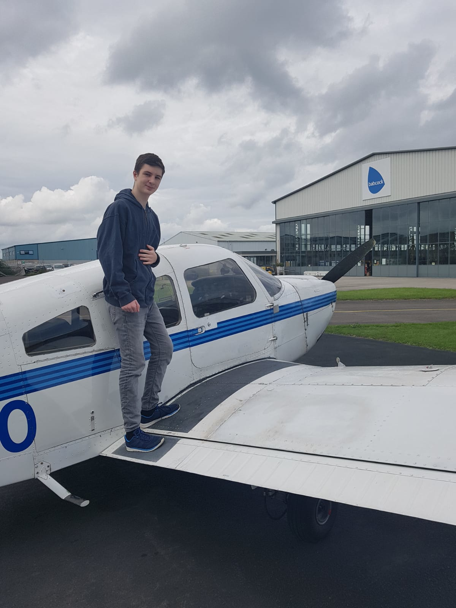
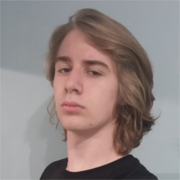

Candlewick Bentley Harrington-Smythe VI
Candlewick

| Statistics | |
|---|---|
| Height | 180cm (5ft 11in) |
| Weight | 64kg (10st 1lb) |
| Reach | 180cm (5ft 11in) |
| Stance | Orthodox |
| Sponsor | None (Too rich to need one) |
| Theme Song | Frank Onkentwist and the Hundrels - The Candlebury Tales |
| @Candlewick69 | |
| Division | Lightweight |
| Record | 0-1-0 |
Candlewick Bentley Harrington-Smythe VI is a fighter in the GBC competing in the Lightweight division.
Candlewick is incredibly rich.
Candles also runs the hit GBC podcast, The Candlescast.
Entrapment in a Cave
Until the 16th of September 2019, Candlewick was trapped in a cave in Saint Petersburg. During this time he was impersonated on twitter by the Local Voice Changer using the handle @CandlewickGBC, and later @Candlewick69.
Whilst impersonating Candlewick, the Local Voice Changer claimed he was very rich and had a private jet. Some have speculated that it was not really a jet, as it was driven by a propellor. He also claimed to be the owner of a huge warehouse full of 127 thousand kilograms of rotten bananas. During the time he was impersonating Candlewick, the Local Voice Changer had a theme song commissioned from Frank Onkentwist and the Hundrels.
Buff Lads 2019
In a major upset, Candlewick became ill with chicken pox three days before Buff Lads 2019. Some have speculated that he was not ill, but in fact simply too rich to attend. It was later revealed that he was actually trapped in a cave in Saint Petersburg. There was expected to be at least one boxing match at Buff Lads 2019, but since Candlewick didn't attend, everyone won by default. Candlewick was given the Got Ill 3 Days Before Buff Lads award in absence, and those attending tried to play his theme song, the Argentina national anthem, but Alexa misheard and played Don't Cry for Me Argentina instead.
Candles's Impersonation
On September 16th, Candlewick's real account tweeted the GBC saying that "...some impostor (has been) going around under my name." and asking "Why didn't you do better background checks?". After a short conversation, Candlewick revealed that he had been trapped in a cave in Saint Petersburg for over two months, explaining his absence at Buff Lads 2019. He had been rescued by Sergei Popov, who was there with his work to build an orphanage. Candlewick explained his suspicions that his impersonator was in fact the Local Voice Changer, and he revealed his plan to replace the impostor at Wick, Stock, and Two Smoking Barrels. It was hoped that boxing at a high-profile match would force Fake Candlewick into the open, as people around him would question how he was in two places at once. Candlewick hoped that "Everyone (would call) him out for going back on his (word)" and the embarrasment would force Fake Candlewick to show his face.
Wick, Stock, And 2 Smokin' Barrels
On Thursday August 15th 2019, GBC Number 1 Contender Candlewick challenged Bagstock for the Cruiserweight title. The fight took place on Sunday September 22nd 2019. Fake Candlewick (the Local Voice Changer) was quoted saying "Frankly, I think Bagstock is a diabetic, and I'm the cake in this situation."
After a long buildup with a large amount of twitter drama and trash talk, the fight finally happened. Candlewick came out swinging at the start, dictating the pace of the fight and forcing Bagstock to fight off his back foot. Bagstock relied on tactical clinching and counterpunching in much of the first round. All 3 judges scored round 1 10-9 to Candlewick.
The second round saw Candlewick visibly tired. His arms started to hang at his sides, and now it was Bagstock dictating the pace of the fight. Midway through the round, Candlewick's gumshield fell out. The referee was unsure whether he had spat it out deliberately to take a time out, so he decided to be cautious, rule in Candlewick's favour and not score this stoppage as a knockdown. Bagstock kept on swinging and grinding Candlewick down. All 3 judges scored round 2 10-9 to Bagstock.
The third round saw Candlewick even more tired than the second. He clinched a lot, leaned on the fences, and leaned on Bagstock to rest. Bagstock's pace and power remained unchanged from the previous rounds. If anything, it improved, as Bagstock became used to Candlewick's style and started slipping his overhand rights and counterpunching with right hooks to the body. After being told to break a clinch against the fence, Candlewick continued to lean against the fence, exhausted. The referee asked him to step into the centre of the ring and asked if he was okay and if he wanted to continue. Candlewick replied that he would "give it until the end of the round". The referee allowed him to continue, this time scoring a knockdown against Candlewick. With 20 seconds until the end of the round, Bagstock had Candlewick against the opposite fence, and Candlewick seemed unable to keep his hands up to block Bagstock's punches. The referee finally stepped in and called off the fight, earning Bagstock the win by TKO. When asked, all 3 judges said they would have scored the round 10-8 or 10-7 to Bagstock.

Continued Training
After the fight, Candles went to the Bahamas to undertake a rigorous 8 month training camp. During this time he was absent from twitter.
Judging and Coaching Career
During the rigorous training camp leading up to The Riser Of The Dead, Candles was employed by The Reaper to provide expert guidance, since Candles was the only man so far to have stepped into the ring with Bagstock. This was revealed during the press conference, much to the surprise of the entire worldwide GBC fanbase.
Candles then worked at that same event as a judge. Some consider this a conflict of interest, but Candles disagrees. He scored the event a draw at 47-47, ultimately leading the event to be ruled a draw by split decision.
Move to Lightweight
Candles decided at some point to drop down from Cruiserweight to Lightweight as he bided his time, waiting for the right opponent to pounce on when the time was right. During this time he began an intensive training regimen, but unfortunately as soon as he started running he slipped on a rock and pulled his groin. Poor old Candles had been cucked once again.
Boxing Record
| Record | Opponent | Event | |
|---|---|---|---|
| Loss | 0-0-1 |  Bagstock |
Wick, Stock, And 2 Smokin' Barrels |
Buff Lads Record
| Buff Lads 2022 | |
|---|---|
| 100 Metres | 18.16 (47 pts) |
| Bench Press | 45kg |
| Bicep Curl | 40kg |
| Clean & Jerk | 30kg |
| Countdown | 25 pts |
| Deadlift | 95kg |
| Overhead Press | 25kg |
| Plank | 2:18 (46 pts) |
| Pull Ups | 4 (16 pts) |
| Squat | 60kg |
| Total | 419 pts |
| Weight | 64kg |
| Lb for Lb | 6.547 |